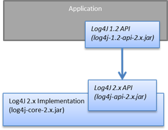
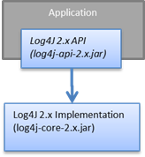

Migrating from Log4j 1.x to 2.x
This page explains how to migrate applications or libraries currently using the Log4j 1.x API to use Log4j v2 as their main logging framework.
Option 1: use the Log4j 1.x bridge (log4j-1.2-api)
You may be able to convert an application to Log4j 2 without any code changes by replacing the Log4j 1.x jar file with Log4j 2’s log4j-1.2-api.jar.
The Log4j 1.x bridge is useful when:
- the application itself is (maybe partly) still using the Log4j 1.x API, or if
- the application depends on a library which depends on the Log 1.x API, or
- the application needs to support logging configurations in the old Log4j 1.x format.
To use this option, applications need to use the following three jar files: the Log4j 2 API jar (log4j-api.jar), the Log4j 2 implementation jar (log4j-core.jar) and the Log4j 1.x bridge jar (log4j-1.2-api.jar).

For most applications this is sufficient. This is a low-effort way to migrate, and may also allow for migration to proceed gradually over time.
Enabling the Log4j 1.x bridge
Enable the Log4j 1.x bridge via one of the following steps:
- Set the system property “log4j1.compatibility” to a value of “true”. Log4j 2 will then add log4j.properties, log4j-test.properties, log4j.xml and log4j-test.xml to the configuration files it searches for on the class path.
- Set the Log4j 1 system property “log4j.configuration” to the location of the log4j 1 configuration file. The files must have a file extension of either “.properties” or “.xml”.
API Compatibility
Log4j 2 provides support for the Log4j 1 logging methods by providing alternate implementations of the classes containing those methods. These classes may be found in the log4j-1.2-api jar distributed with the project. All calls to perform logging will result in the data passed to the logging methods to be forwarded to the Log4j2 API where they can be processed by implementations of the Log4j 2 API.
Configuration Compatibility
Log4j 2 provides support for Log4j 1 configuration files. Configuration of the Appenders, Layouts and Filters that were provided in the Log4j 1 distribution will be redirected to their Log4j 2 counterparts - with the exception of the implemented Rewrite Policies. This means that although the behavior of these components will be similar, they may not be exactly the same. For example, the XML generated by the XMLLayout may not exactly match the XML generated by the Log4j1XMLLayout.
In addition, Log4j 2 supports custom Log4j 1 Appenders, Filters, and Layouts with some constraints. Since the original Log4j 1 components may not be present in Log4j 2, custom components that extend them will fail.
Supported Components
Supported Appenders include: AsyncAppender, ConsoleAppender, DailyRollingFileAppender, FileAppender, NullAppender, RewriteAppender (limited), RollingFileAppender, SyslogAppender.
Supported Filters include: DenyAllFilter, LevelMatchFilter, LevelRangeFilter, StringMatchFilter.
Supported Layouts include: HtmlLayout, PatternLayout, SimpleLayout, TTCCLayout , XmlLayout.
Supported Rewrite Policies include: MapRewritePolicy, PropertyRewritePolicy.
Unsupported or Unimplemented Components
If your configuration contains any of the below components, consider migrating your configuration to the Log4j 2 format.
Appenders
- JDBCAppender (cannot be mapped to Log4j 2’s JdbcAppender)
- JMSAppender
- SMTPAppender
- SocketAppender (Requires the use of the SerializedLayout which is a security risk)
- SocketHubAppender (Requires the use of the SerializedLayout which is a securiy risk)
- TelnetAppender (Security risk)
Rewrite Policies
- ReflectionRewritePolicy
- Custom rewrite policies since LoggingEvent is currently a no-op.
Renderers
Log4j 2 currently ignores renderers.
Limitations of the Log4j 1.x bridge
Applications can migrate by just using the bridge without further code changes, if they meet the following requirements:
- They must not access methods and classes internal to the Log4j 1.x implementation such as Appenders, LoggerRepository or Category’s callAppenders method.
- They must not programmatically configure Log4j.
- They must not configure by calling the Log4j 1.x classes DOMConfigurator or PropertyConfigurator.
When to stop using the Log4j 1.x bridge
Once you have migrated all of your own application and library code under your control, you may not need the bridge any more. Note that when you use a library/framework that can be configured to use several logging frameworks, then you typically don’t need the log4j-1.2-api bridge either, as you may be able to directly configure it to use Log4j v2 instead v1. Some libraries/frameworks even auto-detect the presence of certain logging framework implementations on their classpath, and automagically switch their internal logging delegation accordingly; try simple removing the Log4j v1 dependency instead of replacing it with this bridge, and test if logging from all of your dependencies still work.
If you own or can contribute open source to the library you depend on, consider replacing its use of the Log4j v1 API with the v2 API.
While the Log4j 1.x bridge supports logging configurations that use the Log4j 1.x properties or XML format, migrating to the new 2.x format is not difficult. The Log4j 2 web site contains extensive documentation on the 2.x configuration format. Examples for migrating logging configurations from the v1 format to the v2 format are below.
Option 2: convert your application to the Log4j 2 API (log4j-api)
The other migration option involves changing your application code to use the Log4j 2 API. For the most part, converting from the Log4j 1.x API to Log4j 2 should be fairly simple. Many of the log statements will require no modification. However, where necessary the following changes must be made.

| Log4j 1.x | Log4j 2.x |
|---|---|
| Package name: org.apache.log4j | org.apache.logging.log4j |
| Calls to org.apache.log4j.Logger.getLogger() | org.apache.logging.log4j.LogManager.getLogger() |
| Calls to org.apache.log4j.Logger.getRootLogger() or org.apache.log4j.LogManager.getRootLogger() | org.apache.logging.log4j.LogManager.getRootLogger() |
| Calls to org.apache.log4j.Logger.getLogger that accept a LoggerFactory | Remove the org.apache.log4j.spi.LoggerFactory and use one of Log4j 2’s other extension mechanisms |
| Calls to org.apache.log4j.Logger.getEffectiveLevel() | org.apache.logging.log4j.Logger.getLevel() |
| Calls to org.apache.log4j.LogManager.shutdown() | Not needed in version 2 because the Log4j Core now automatically adds a JVM shutdown hook on start up to perform any Core clean ups. Starting in Log4j 2.1, you can specify a custom ShutdownCallbackRegistry to override the default JVM shutdown hook strategy. Starting in Log4j 2.6, you can use org.apache.logging.log4j.LogManager.shutdown() to initiate shutdown manually. |
| Calls to org.apache.log4j.Logger.setLevel() or similar methods | Not supported at API level. Equivalent functionality is provided in the Log4j 2 implementation classes, see org.apache.logging.log4j.core.config.Configurator.setLevel(), but this may leave the application susceptible to changes in Log4j 2 internals. |
| String concatenation like logger.info("hi " + userName) | Parameterized messages like logger.info("hi {}", userName) |
| org.apache.log4j.MDC and org.apache.log4j.NDC | Thread Context |
Migrating logging configurations to the Log4j 2 format
Although the Log4j 2 configuration syntax is different from that of Log4j 1.x, most, if not all, of the same functionality is available.
Interpolation
Note that system property interpolation via the ${foo} syntax has been extended to allow property lookups from many different sources. See the Lookups documentation for more details. For example, using a lookup for the system property named catalina.base, in Log4j 1.x, the syntax would be ${catalina.base}. In Log4j 2, the syntax would be ${sys:catalina.base}.
Layouts
Log4j 1.x has a XMLLayout which is different from the XmlLayout in Log4j 2. The log4j-1.2-api module contains a Log4j1XmlLayout that produces output in the Log4j 1.x format.
The Log4j 1.x SimpleLayout can be emulated with PatternLayout “%level - %m%n”.
The Log4j 1.x TTCCLayout can be emulated with PatternLayout “%r [%t] %p %c %notEmpty{%ndc }- %m%n”.
Both PatternLayout and EnhancedPatternLayout in Log4j 1.x can be replaced with PatternLayout in Log4j 2. The log4j-1.2-api module contains two pattern conversions “%ndc” and “%properties” which can be used to emulate “%x” and “%X” in Log4j 1.x PatternLayout (“%x” and %X" in Log4j 2 have a slightly different format).
Below are some example configurations for Log4j 1.x and their counterparts in Log4j 2.
Sample 1 - Migrating a simple Console Appender configuration
Log4j 1.x XML configuration
<!DOCTYPE log4j:configuration PUBLIC "-//APACHE//DTD LOG4J 1.2//EN" "log4j.dtd">
<log4j:configuration xmlns:log4j='http://jakarta.apache.org/log4j/'>
<appender name="STDOUT" class="org.apache.log4j.ConsoleAppender">
<layout class="org.apache.log4j.PatternLayout">
<param name="ConversionPattern" value="%d %-5p [%t] %C{2} (%F:%L) - %m%n"/>
</layout>
</appender>
<category name="org.apache.log4j.xml">
<priority value="info" />
</category>
<Root>
<priority value ="debug" />
<appender-ref ref="STDOUT" />
</Root>
</log4j:configuration>
Log4j 2 XML configuration
<Configuration>
<Appenders>
<Console name="STDOUT" target="SYSTEM_OUT">
<PatternLayout pattern="%d %-5p [%t] %C{2} (%F:%L) - %m%n"/>
</Console>
</Appenders>
<Loggers>
<Logger name="org.apache.log4j.xml" level="info"/>
<Root level="debug">
<AppenderRef ref="STDOUT"/>
</Root>
</Loggers>
</Configuration>
Sample 2 - Migrating a simple File Appender, XMLLayout and SimpleLayout configuration
Log4j 1.x XML configuration
<!DOCTYPE log4j:configuration PUBLIC "-//APACHE//DTD LOG4J 1.2//EN" "log4j.dtd">
<log4j:configuration xmlns:log4j="http://jakarta.apache.org/log4j/">
<appender name="A1" class="org.apache.log4j.FileAppender">
<param name="File" value="A1.log" />
<param name="Append" value="false" />
<layout class="org.apache.log4j.xml.XMLLayout" />
</appender>
<appender name="STDOUT" class="org.apache.log4j.ConsoleAppender">
<layout class="org.apache.log4j.SimpleLayout" />
</appender>
<category name="org.apache.log4j.xml">
<priority value="debug" />
<appender-ref ref="A1" />
</category>
<root>
<priority value ="debug" />
<appender-ref ref="STDOUT" />
</Root>
</log4j:configuration>
Log4j 2 XML configuration
<Configuration>
<Appenders>
<File name="A1" fileName="A1.log" append="false">
<Log4j1XmlLayout />
</File>
<Console name="STDOUT" target="SYSTEM_OUT">
<PatternLayout pattern="%level - %m%n"/>
</Console>
</Appenders>
<Loggers>
<Logger name="org.apache.log4j.xml" level="debug">
<AppenderRef ref="A1"/>
</Logger>
<Root level="debug">
<AppenderRef ref="STDOUT"/>
</Root>
</Loggers>
</Configuration>
Sample 3 - Migrating a SocketAppender configuration
Log4j 1.x XML configuration. This example from Log4j 1.x is misleading. The SocketAppender does not actually use a Layout. Configuring one will have no effect.
<!DOCTYPE log4j:configuration PUBLIC "-//APACHE//DTD LOG4J 1.2//EN" "log4j.dtd">
<log4j:configuration xmlns:log4j="http://jakarta.apache.org/log4j/">
<appender name="A1" class="org.apache.log4j.net.SocketAppender">
<param name="RemoteHost" value="localhost"/>
<param name="Port" value="5000"/>
<param name="LocationInfo" value="true"/>
<layout class="org.apache.log4j.PatternLayout">
<param name="ConversionPattern" value="%t %-5p %c{2} - %m%n"/>
</layout>
</appender>
<appender name="STDOUT" class="org.apache.log4j.ConsoleAppender">
<layout class="org.apache.log4j.PatternLayout">
<param name="ConversionPattern" value="%d %-5p [%t] %C{2} (%F:%L) - %m%n"/>
</layout>
</appender>
<category name="org.apache.log4j.xml">
<priority value="debug"/>
<appender-ref ref="A1"/>
</category>
<root>
<priority value="debug"/>
<appender-ref ref="STDOUT"/>
</Root>
</log4j:configuration>
Log4j 2 XML configuration
<Configuration>
<Appenders>
<Socket name="A1" host="localHost" port="5000">
<PatternLayout pattern="%t %-5p %c{2} - %m%n"/>
</Socket>
<Console name="STDOUT" target="SYSTEM_OUT">
<PatternLayout pattern="%d %-5p [%t] %C{2} (%F:%L) - %m%n"/>
</Console>
</Appenders>
<Loggers>
<Logger name="org.apache.log4j.xml" level="debug">
<AppenderRef ref="A1"/>
</Logger>
<Root level="debug">
<AppenderRef ref="STDOUT"/>
</Root>
</Loggers>
</Configuration>
Sample 4 - Migrating an AsyncAppender and TTCCLayout configuration
Log4j 1.x XML configuration using the AsyncAppender.
<!DOCTYPE log4j:configuration PUBLIC "-//APACHE//DTD LOG4J 1.2//EN" "log4j.dtd">
<log4j:configuration xmlns:log4j="http://jakarta.apache.org/log4j/" configDebug="true">
<appender name="ASYNC" class="org.apache.log4j.AsyncAppender">
<appender-ref ref="TEMP"/>
</appender>
<appender name="TEMP" class="org.apache.log4j.FileAppender">
<param name="File" value="temp"/>
<layout class="org.apache.log4j.TTCCLayout">
<param name="ThreadPrinting" value="true"/>
<param name="CategoryPrefixing" value="true"/>
<param name="ContextPrinting" value="true"/>
</layout>
</appender>
<root>
<priority value="debug"/>
<appender-ref ref="ASYNC"/>
</Root>
</log4j:configuration>
Log4j 2 XML configuration.
<Configuration status="debug">
<Appenders>
<File name="TEMP" fileName="temp">
<PatternLayout pattern="%r [%t] %p %c %notEmpty{%ndc }- %m%n"/>
</File>
<Async name="ASYNC">
<AppenderRef ref="TEMP"/>
</Async>
</Appenders>
<Loggers>
<Root level="debug">
<AppenderRef ref="ASYNC"/>
</Root>
</Loggers>
</Configuration>
Sample 5 - Migrating a configuration using AsyncAppender with Console and File
Log4j 1.x XML configuration using the AsyncAppender.
<!DOCTYPE log4j:configuration PUBLIC "-//APACHE//DTD LOG4J 1.2//EN" "log4j.dtd">
<log4j:configuration xmlns:log4j="http://jakarta.apache.org/log4j/" configDebug="true">
<appender name="ASYNC" class="org.apache.log4j.AsyncAppender">
<appender-ref ref="TEMP"/>
<appender-ref ref="CONSOLE"/>
</appender>
<appender name="CONSOLE" class="org.apache.log4j.ConsoleAppender">
<layout class="org.apache.log4j.PatternLayout">
<param name="ConversionPattern" value="%d %-5p [%t] %C{2} (%F:%L) - %m%n"/>
</layout>
</appender>
<appender name="TEMP" class="org.apache.log4j.FileAppender">
<param name="File" value="temp"/>
<layout class="org.apache.log4j.PatternLayout">
<param name="ConversionPattern" value="%d %-5p [%t] %C{2} (%F:%L) - %m%n"/>
</layout>
</appender>
<root>
<priority value="debug"/>
<appender-ref ref="ASYNC"/>
</Root>
</log4j:configuration>
Log4j 2 XML configuration. Note that the Async Appender should be configured after the appenders it references. This will allow it to shut down properly.
<Configuration status="debug">
<Appenders>
<Console name="CONSOLE" target="SYSTEM_OUT">
<PatternLayout pattern="%d %-5p [%t] %C{2} (%F:%L) - %m%n"/>
</Console>
<File name="TEMP" fileName="temp">
<PatternLayout pattern="%d %-5p [%t] %C{2} (%F:%L) - %m%n"/>
</File>
<Async name="ASYNC">
<AppenderRef ref="TEMP"/>
<AppenderRef ref="CONSOLE"/>
</Async>
</Appenders>
<Loggers>
<Root level="debug">
<AppenderRef ref="ASYNC"/>
</Root>
</Loggers>
</Configuration>